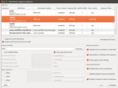
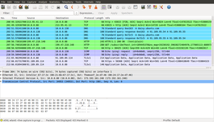

Wireshark
Dieser Artikel wurde für die folgenden Ubuntu-Versionen getestet:
Ubuntu 14.04 Trusty Tahr
Artikel für fortgeschrittene Anwender
Dieser Artikel erfordert mehr Erfahrung im Umgang mit Linux und ist daher nur für fortgeschrittene Benutzer gedacht.
Zum Verständnis dieses Artikels sind folgende Seiten hilfreich:
Wireshark  ist ein sogenannter "Sniffer", mit dem man Netzwerkpakete auf beliebigen Schnittstellen mitschneiden und danach bequem über eine grafische Oberfläche analysieren kann. Netzwerksniffer genießen leider teilweise einen schlechten Ruf, weil sie u.a. auch von Angreifern benutzt werden können, um Passwörter oder andere sensible Daten im Netzwerkverkehr zu erspähen. Sie sind aber auch aus dem Werkzeugschatz seriöser Netzwerk-Administratoren nicht wegzudenken, weil man mit ihnen Probleme in der Vernetzung aufspüren kann. Auch um die Funktion einer Software zu testen, z.B. wenn man wissen will, ob die eingeschaltete Verschlüsselung funktioniert oder wenn man "Nach-Hause-Telefonierern" auf die Schliche kommen will, ist ein Netzwerksniffer nahezu unverzichtbar.
ist ein sogenannter "Sniffer", mit dem man Netzwerkpakete auf beliebigen Schnittstellen mitschneiden und danach bequem über eine grafische Oberfläche analysieren kann. Netzwerksniffer genießen leider teilweise einen schlechten Ruf, weil sie u.a. auch von Angreifern benutzt werden können, um Passwörter oder andere sensible Daten im Netzwerkverkehr zu erspähen. Sie sind aber auch aus dem Werkzeugschatz seriöser Netzwerk-Administratoren nicht wegzudenken, weil man mit ihnen Probleme in der Vernetzung aufspüren kann. Auch um die Funktion einer Software zu testen, z.B. wenn man wissen will, ob die eingeschaltete Verschlüsselung funktioniert oder wenn man "Nach-Hause-Telefonierern" auf die Schliche kommen will, ist ein Netzwerksniffer nahezu unverzichtbar.
Zusätzlich zur grafischen Wireshark-Version gibt es noch das textbasierte Tshark, dass auf demselben Netzwerkcode aufbaut, aber über Kommandozeilen-Optionen gesteuert wird. Beide Versionen benutzen zum Abspeichern von Netzwerkverkehr dasselbe Format (wie im übrigen auch der Klassiker tcpdump), so dass man bspw. problemlos auf einem Server mit tshark (oder tcpdump) den Verkehr mitschneiden und später in aller Bequemlichkeit auf einer grafischen Workstation mit Wireshark analysieren kann.
Altgedienten Recken ist Wireshark noch unter dem alten Namen Ethereal bekannt. Als der Hauptentwickler der Software vor einiger Zeit den Arbeitgeber wechselte, durfte er die Marke "Ethereal" nicht mitnehmen, weswegen er die Software jetzt unter einem neuen Namen weiterpflegt. tshark hieß dementsprechend früher tethereal.
Installation¶
Für Wireshark muss folgendes Paket installiert [1] werden:
wireshark (universe)
 mit apturl
mit apturl
Paketliste zum Kopieren:
sudo apt-get install wireshark
sudo aptitude install wireshark
Möchte man tshark nutzen, benötigt man dagegen:
tshark (universe)
mit apturl
Paketliste zum Kopieren:
sudo apt-get install tshark
sudo aptitude install tshark
PPA¶
Eine eventuelle neuere Version ist Bestandteil eines "Personal Packages Archiv" (PPA) [2].
Adresszeile zum Hinzufügen des PPAs:
ppa:wireshark-dev/stable
Hinweis!
Zusätzliche Fremdquellen können das System gefährden.
Ein PPA unterstützt nicht zwangsläufig alle Ubuntu-Versionen. Weitere Informationen sind der  PPA-Beschreibung des Eigentümers/Teams wireshark-dev zu entnehmen.
PPA-Beschreibung des Eigentümers/Teams wireshark-dev zu entnehmen.
Damit Pakete aus dem PPA genutzt werden können, müssen die Paketquellen neu eingelesen werden.
Nach dem Aktualisieren der Paketquellen erfolgt die Installation wie oben angegeben.
Programmstart¶
Achtung!
Aus Sicherheitsgründen sollten Wireshark und tshark niemals mit Root-Rechten gestartet werden [3], da dies beispielsweise ein Exploit ausnutzen kann und darüber dann im schlimmsten Fall das ganze System lahm legen kann! Wireshark und tshark mit Root-Rechten aufzurufen, ist daher keine gute Idee.
Stattdessen sollte immer die nachfolgend beschriebene Methode verwendet werden.
Einigen Nutzern wird aufgefallen sein, dass bei Ubuntu-Versionen mit einem Anwendungsmenü der früher vorhandene Eintrag "Wireshark (as root)" unter "Anwendungen -> Internet" nicht mehr vorhanden ist. Viele Wireshark-Nutzer denken, dass unbedingt Root-Rechte benötigt werden, um den vollen Funktionsumfang von Wireshark nutzen zu können und rufen Wireshark fälschlicherweise mit gksudo oder kdesudo auf. Dass dies gefährlich werden kann, wissen die wenigsten. Da bewusst auf den zweiten Eintrag verzichtet wurde bzw. wird, muss man ein klein wenig nachhelfen, um als normaler Nutzer den Netzwerkverkehr mitschneiden zu können.
Im folgenden wird gezeigt, wie Wireshark in vollem Funktionsumfang genutzt wird, ohne Root-Rechte zu benötigen. Hierzu wechselt man in ein Terminal und gibt folgenden Befehl ein:
sudo dpkg-reconfigure wireshark-common
Nachdem man die Information durchgelesen hat, bestätigt man die Frage, ob außer dem Superuser noch andere Nutzer Pakete aufzeichnen dürfen, mit "Ja". Dieser Schritt konfiguriert Dumpcap so, dass alle Mitglieder der Gruppe wireshark Pakete mitschneiden können, ohne das Programm als Root betreiben zu müssen. Damit man als normaler Nutzer den Netzwerkverkehr mitschneiden kann, fügt man den – oder die – Benutzer der Gruppe wireshark hinzu [4].
Allgemein:
sudo adduser BENUTZERNAME wireshark
Den eigenen Benutzernamen:
sudo adduser $USER wireshark
Hinweis:
Damit die Änderung des Benutzerkontos aktiv wird, muss die Umgebung neu geladen werden. Dies erreicht man durch einmaliges ab- und wieder anmelden oder über den Befehl newgrp.
Nun benötigen Wireshark und tshark zum Mitschneiden des Netzwerkverkehrs keine Root-Privilegien mehr, da /usr/bin/dumpcap nun der der Gruppe wireshark angehört und somit alle Mitglieder dieser Gruppe Pakete mitschneiden können.
Mitschneiden¶
 Man startet den Vorgang mit dem Menüpunkt "Capture -> Options..." oder durch den zweiten Knopf von links in der Werkzeugleiste. Es öffnet sich ein Dialog (siehe Abbildung), in dem man noch diverse Einstellungen tätigen kann:
Hinweis:
Alle diese Optionen können über die "Capture"- bzw. "Name resolution"-Einstellungen unter "Edit -> Preferences" dauerhaft eingestellt werden. Ansonsten gehen diese Optionen beim nächsten Start von Wireshark verloren.
| Option | Bedeutung |
| Interface | Die Schnittstelle, auf der gesnifft werden soll. Man kann entweder eine einzelne oder alle zusammen auswählen. |
| Link-layer header type | Sollte eigentlich immer auf "Ethernet" stehen. |
| Capture packets in promiscuous mode | Der Promiscuous Mode fängt nicht nur die Pakete aus dem Netz ein, die für die gewählte Netzwerkkarte bestimmt sind, sondern auch alle anderen. (Was in einem geswitchten Netzwerk allerdings normalerweise keinen Unterschied macht.) Die Option kann im Allgemeinen immer aktiviert bleiben. |
| Limit each packet | Wenn man z.B. nur an Headerdaten interessiert ist, kann man hiermit die Datenteile der Pakete abschneiden lassen. |
| Capture Filter | Hier öffnet sich ein weiterer Dialog, in dem man Filterregeln bestimmen kann, welche Art Pakete man mitschneiden will, und welche nicht. Filter werden weiter unten erklärt. |
| Capture File | Hier kann man eine Datei benennen, in der der Netzwerkverkehr abgespeichert wird. Als Speicherformat wird das sog. pcap-Format verwendet, weswegen es sinnvoll - aber nicht notwendig - ist, der Datei die Endung .pcap zu verpassen. |
| Use multiple files (und folgende) | Es werden fortlaufend durchnummerierte Dateien erzeugt, ähnlich rotierter Logdateien. |
| Stop Capture | Selbsterklärend. Es wird festgelegt, wieviel mitgeschnitten werden soll. |
| Update list of packets in real time | Normalerweise snifft man mit Wireshark erst, und analysiert dann. Mit dieser Option kann man schon während des Sniffvorgangs in den Daten stöbern. Da die Darstellung relativ aufwendig ist, könnte es jedoch passieren, dass der Sniffer auf diese Art das eine oder andere Paket verpasst. Wer sicher gehen will, lässt diese Option deswegen aus. Wer anhaltend sniffen und sich zwischendurch die Daten ansehen will, kann tshark in eine Datei schreiben lassen, und dann mit Wireshark zwischendurch dort hineinschauen. |
| Automatic scrolling in live capture | Eher nervig. Immer wenn neue Pakete eintreffen, springt die Anzeige ans Ende, so dass man nichts genauer betrachten kann. |
| Hide capture info dialog | Das Fenster, in dem während des Capture-Vorgangs die Anzahl der mitgeschnittenen Pakete angezeigt wird, wird unterdrückt. |
| Enable MAC name resolution | Bei Paketen unterhalb der IP-Ebene (z.B. ARP-Pakete) werden die ersten Stellen der MAC-Adresse durch den Herstellernamen ersetzt. |
| Enable network name resolution | IP-Adressen werden per DNS in Rechnernamen umgewandelt. Wenn die Namensauflösung über dieselbe Schnittstelle abgewickelt wird, an der gerade gesnifft wird, füllt das natürlich die Liste mit endlosen DNS-Abfragen und ist deswegen nicht unbedingt zu empfehlen. (Man kann natürlich auch einfach DNS-Pakete über einen Capture Filter ausgrenzen.) |
| Enable transport name resolution | U.a. werden mit dieser Option Portnummern nach Möglichkeit in Dienstnamen umgewandelt. |
Es gibt auch noch zwei Kurzformen, um einen Capture-Vorgang zu starten. "Capture -> Interfaces" (bzw. das erste Symbol der Werkzeugleiste) lässt einen aus der Liste der Schnittstellen wählen, behält aber die eingestellten Optionen bei. "Capture -> Start" (oder dritter Knopf) startet sofort den Mitschnitt mit den voreingestellten Optionen inkl. Interface.
Anhalten kann man den Vorgang ebenfalls über das Menü oder die Werkzeugleiste, oder auch, indem man einfach den "Stop"-Knopf im "Capture info"-Dialog klickt - sofern man diesen Dialog nicht abgeschaltet hat.
Hauptfenster¶
 Hat man erstmal genug Netzwerkverkehr aufgezeichnet, eine pcap-Datei geladen, oder hat man in den Einstellungen "Update list of packets in real time" angewählt (s.o.), so füllt sich das Hauptfenster mit den entsprechenden Daten. Von oben nach unten gesehen ist das Fenster vertikal in folgende sechs Bereiche aufgeteilt:
Werkzeugleiste¶
Die wichtigsten Funktionen des Programms können hier über einen Mausklick betätigt werden. Beschrieben werden diese Funktionen in den anderen Abschnitten dieses Artikels.
Filterleiste¶
In dieser Zeile können Filterregeln festgelegt werden, welche Art von Verkehr in der Paketliste ein- bzw. ausgeblendet werden soll. Die Filterleiste wird weiter unten im Abschnitt Filter beschrieben.
Paketliste¶
Neben einer durchlaufenden Nummerierung, einem Zeitstempel relativ zum Beginn der Aufzeichnung, der Quell- und der Zieladresse wird hier noch das Protokoll angezeigt, zu dem das jeweilige Paket gehört. Hierbei wird stets das Protokoll des höchsten verfügbaren Levels aufgelistet. Ein HTTP-Paket wird also z.B. genau so gelistet, und nicht etwa als TCP-, IP-Paket oder Ethernet-Frame. Je nach Protokoll werden die Zeilen unterschiedlich eingefärbt, um eine optimale Übersicht zu gewährleisten.
Durch Anklicken kann man ein bestimmtes Paket auswählen, dass dann in den weiter unten gelegenen Bereichen genauer dargestellt wird. Außerdem existiert ein Kontextmenü, über das man einige praktische, weiter unten beschriebene Funktionen erreichen kann.
Paketdetails¶
Hier wird das jeweils angewählte Paket in seine Bestandteile zerlegt und analysiert, wobei der Protokollstack von unten nach oben durchgegangen wird. Durch Klick auf die jeweiligen Pfeile kann man genau die Sektionen ausrollen, die einen interessieren. Ohne zumindest oberflächliche Kenntnis von den betreffenden Protokollen zu haben, sind diese Informationen jedoch nur von begrenztem Wert.
Das Kontextmenü in den Paketdetails bietet einige zusätzliche, nützliche Einträge, die sonst nirgendwo zu finden sind. So kann man bspw. auf den Eintrag "Resolve Name" auswählen, und die Namen werden auf der jeweiligen Protokollebene aufgelöst und in den entsprechenden Feldern eingetragen, sofern man für den entsprechenden Bereich die automatische Namensauflösung deaktiviert hat. (Für DNS-Namensauflösung muss man z.B. das Kontextmenü von "Internet Protocol" nutzen.)
Außerdem kommt man über das Kontextmenü auch sehr leicht an weitere Informationen. Mit "Wiki Protocol Page" öffnet Wireshark einen Browser mit der Seite aus dem Wireshark-Wiki, wo das betreffende Protokoll ausführlich beschrieben wird. Mit "Filter Field Reference" gelangt man dagegen auf eine Seite, wo alle Filter-Funktionen (s.u.) bzgl. des Protokolls dokumentiert sind.
Bytes¶
Hier wird das Paket in seiner Rohform als Hex- und ASCII-Dump dargestellt.
Filter¶
Wireshark besitzt mächtige Filterfunktionen, mit deren Hilfe man auch auf stark frequentierten Systemen den Überblick behalten kann. Hierfür benutzt Wireshark eine eigene Filtersprache, deren Syntax allerdings den Rahmen dieses Artikels übersteigt. Wer sie lernen möchte, kann die umfangreiche Manpage wireshark-filter durcharbeiten oder er betreibt "learning by doing" anhand der im Folgenden beschriebenen grafischen Werkzeuge.
Zentrales Werkzeug für den Filter ist die Filterleiste im oberen Teil des Hauptfensters. Hier befindet sich ein Texteingabefeld, in dem man den aktuellen Filter ansehen oder auch verändern kann. Ob der Filterstring den Syntaxregeln entspricht, wird durch die Hintergrundfarbe des Textfelds direkt beim Eintragen angezeigt.
Rechts davon existieren u.a. Knöpfe, um den Filterstring anzuwenden, oder um den vorhandenen Filter zu löschen (und dadurch wieder alle Pakete anzuzeigen).
Filtern nach Paketen¶
Die einfachste Art, Filter zu erstellen, ist über das Kontextmenü in der Paketliste. Über den Eintrag "Conversation Filter" kann man bspw. alle Pakete heraussuchen lassen, die nach dem dann ausgewählten Protokoll dieselben Quell- und Zieladressen besitzen.
Daneben existieren noch die Funktionen "Apply as Filter" und "Prepare as Filter". Die erste von beiden wendet den Filter sofort an, während die zweite ihn nur in der Filterleiste einträgt, wo er mit dem "Anwenden"-Knopf aktiviert werden muss. Das ist vor allem sinnvoll, wenn man erstmal mehrere Filter verknüpfen will.
Diese beiden Funktionen arbeiten nicht nur zeilen- sondern auch spaltensensitiv. D.h. je nachdem, ob man das Menü über der Quell- oder Zieladresse öffnet, bezieht sich der Filter auch auf die Quell- oder Zieladresse. Aus dem sich öffnenden Untermenü kann man dann auswählen, ob man alle Pakete mit dieser Adresse anzeigen lassen will, oder ob man den Filter umkehren will. Außerdem kann man den Filter per "and" oder "or" mit dem bestehenden Filter verknüpfen.
Filter-Dialog¶
Über den mit "Filter" beschrifteten Knopf am linken Rand der Filterleiste gelangt man in den Filter-Dialog. Dieser funktioniert in etwa wie die Lesezeichen-Verwaltung eines Webbrowsers. Ein paar vordefinierte Filter existieren dort schon. Hat man gerade einen Filter im Hauptfenster laufen, kann man diesen mit dem "Neu"-Knopf in die Liste aufnehmen, vorzugsweise nachdem man einen aussagekräftigen Namen in das zuständige Feld eingetragen hat.
Expression-Dialog¶
Mit dem Knopf "Expression" gelangt man in einen anderen Dialog, mit dem man ebenfalls Filterregeln erstellen kann. Hierbei klickt man die Regel aus den vorhandenen Syntaxelementen zusammen. Ein Studium der Manpage wireshark-filter ist hierzu aber ebenfalls anzuraten.
Menü¶
Wireshark besitzt ein sehr reichhaltiges Menü. In diesem Artikel werden aber nur die wichtigsten/interessantesten beschrieben.
File-Menü¶
Hier befinden sich die typischen Einträge. Man kann den Mitschnitt in verschiedenen Formaten speichern, wieder öffnen oder in diverse andere Formate exportieren, die sich dann von anderen Programmen lesen lassen. Auch eine Druckfunktion ist integriert.
Über "Merge" lassen sich mehrere Dateien öffnen und die Pakete zu einer einzigen Liste verschmelzen. So kann man bspw. mehrere Mitschnitte aneinander hängen, oder auch Mitschnitte von unterschiedlichen Rechnern zusammenfassen.
Edit-Menü¶
In diesem Menü befindet sich eine Suchfunktion. Außerdem kann man einzelne Pakete mit einer Markierung versehen, die man dann u.a. in der Speicher- oder Druckfunktion verwenden kann, oder einfach nur, um eine bestimmte Stelle später wiederzufinden.
View-Menü¶
Hier kann man u.a. einzelne Teile des Haupftfensters ausblenden, wenn man z.B. mit der Bytedarstellung überhaupt nichts anfangen kann und den Platz lieber anderweitig nutzen möchte.
Capture-Menü¶
Das "Capture"-Menü wurde weiter oben schon beschrieben.
Analyze-Menü¶
Hier findet man ein paar Funktionen zur Analyse des mitgeschnittenen Netzwerkverkehrs. U.a. die äußerst nützliche Funktion "Follow TCP Stream" (die sich auch im Kontextmenü der Paketliste anfindet), und die auch gerade Netzwerk-Laien sehr einfach an die relevanten Informationen kommen lässt. Es öffnet sich ein neues Fenster, indem die komplette TCP-Verbindung des markierten Pakets als Fließtext ohne störende Headerdaten dargestellt wird.
Über "Firewall ACL Rules" gelangt man in einen Dialog, mit dessen Hilfe man aus dem markierten Paket eine Firewall-Regel nach einem von mehreren wählbaren Formaten (z.B. "Netfilter (iptables)") erstellen kann. Diese kann dann per Copy'n'Paste woanders eingefügt werden.
Statistics-Menü¶
Hier finden sich zahlreiche Möglichkeiten zur statistischen Auswertung der aufgezeichneten Daten. Welche man davon als nützlich empfindet, kann jeder selber ausprobieren.
tshark¶
Tshark ist die Kommandozeilenversion von Wireshark. Ohne die Option -w gibt das Programm "live" alle empfangenen Pakete im Terminal aus, in einer Ausgabe die identisch zu der Listenansicht in Wireshark ist. Wer genauer analysieren möchte, nutzt am besten -w <Dateiname> um den gesamten Verkehr (nicht nur die Header) in einer pcap-Datei zu speichern, und lädt diese dann - evtl. auf einem anderen System - in die grafische Wireshark-Version. Ein paar interessante Optionen folgen, der Rest ergibt sich aus der Lektüre der tshark-Manpage.
| Option | Bedeutung |
-w <Dateiname> | Schreibt komplette Paketinhalte im pcap-Format in die angegebene Datei, anstatt nur eine Infozeile pro Paket auszugeben. |
-S | Gibt auch bei Verwendung von -w die Infozeilen während des Sniffvorgangs aus. |
-i <Interface> | Beschränkt die Aktivität von tshark auf eine bestimmte Netzwerkschnittstelle. |
-R <Filter> | Filtert gleich beim Einlesen. Die Syntax ist dieselbe wie in Wireshark. |
 Programmübersicht
Programmübersicht- Erstellt mit Inyoka
-
 2004 – 2017 ubuntuusers.de • Einige Rechte vorbehalten
2004 – 2017 ubuntuusers.de • Einige Rechte vorbehalten
Lizenz • Kontakt • Datenschutz • Impressum • Serverstatus -
Serverhousing gespendet von